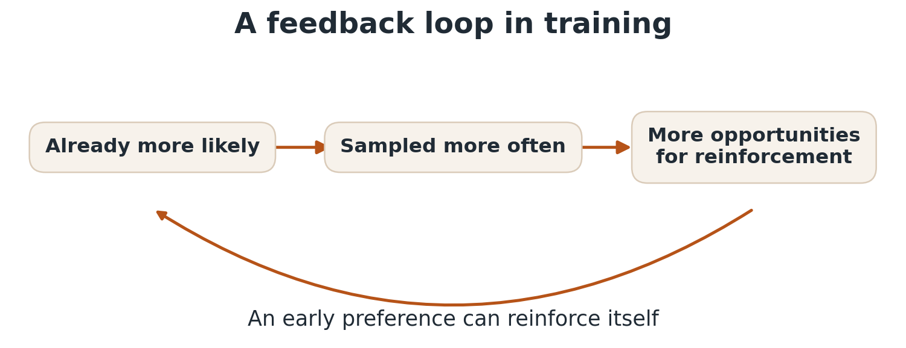

When several answers are right, why does AI keep giving us the same one?
“It is better to solve one problem five different ways, than to solve five different problems one way.”
— George Pólya, as quoted by Marvin Minsky
Suppose you ask an AI to solve a math problem. It gets the answer right. Then you ask it to find another way to solve it, and it gives you essentially the same solution. That's a little disappointing. There might be five perfectly good ways to solve the problem, but you're only seeing one.
For a tool meant to help us explore, providing one correct response may not be sufficient. For example, a student may need another explanation, a programmer might want an alternative implementation, or an architect may need other designs that satisfy the same constraints. We need AI systems that can help us find alternatives, not just a single right way.
Here are five small problems with more than one correct solution. See how many different solutions you can find.
Try a challenge, then open an answer to check it. Look for a second solution before opening the complete answer key. You can close each answer and try again.
Color the three numbered corners of a triangle with blue, orange and teal. Every pair of corners is connected and must have different colors. Find one coloring, then another.
Choose a proposed coloring to check it. Colors are listed in node order: 1 / 2 / 3.
Correct. All three connected pairs have different colors. Swapping colors on numbered nodes gives a new solution.
Not quite. Nodes 1 and 2 are connected but share a color. Try assigning all three colors.
Correct. All three connected pairs have different colors. Swapping colors on numbered nodes gives a new solution.
Fix node 1 to blue. There are two ways to assign orange and teal to the remaining nodes. Repeat with each starting color.
Make 18 using 3, 6 and 9 exactly once. Keep the tiles positive and combine them with two operations: +, −, × or ÷. Parentheses are allowed. Try two different computation trees, then check these choices.
Correct. 3 + 6 + 9 = 18
Correct. (9 × 6) ÷ 3 = 18
Not quite. That equals 27, not 18. Try again.
Try addition first. For another tree, try multiplication and division. Swapping the inputs to an addition or multiplication does not count as a new solution; changing the grouping can.
((9+6)+3) = 18((9+3)+6) = 18(6÷(3÷9)) = 18((9÷3)×6) = 18(9+(6+3)) = 18(9×(6÷3)) = 18(9÷(3÷6)) = 18((9×6)÷3) = 18For each input 18, 82, 91 and 93, return a divisor greater than 1 and smaller than the input. A rule checks its first three divisors in order, returns the first one that divides the input, and otherwise returns its fallback. Find two rules with different four-number output patterns.
Which of these rules works on all four inputs? Open a choice to see its outputs. “Otherwise” is used only when none of the first three divisors divides the input.
Correct. Every output must divide its input and lie strictly between 1 and that input.
| Input | Output | Proper divisor? |
|---|---|---|
| 18 | 2 | Yes |
| 82 | 2 | Yes |
| 91 | 7 | Yes |
| 93 | 3 | Yes |
lambda n: 2 if n % 2 == 0 else 7 if n % 7 == 0 else 3 if n % 3 == 0 else 41
Correct. Every output must divide its input and lie strictly between 1 and that input.
| Input | Output | Proper divisor? |
|---|---|---|
| 18 | 9 | Yes |
| 82 | 41 | Yes |
| 91 | 13 | Yes |
| 93 | 31 | Yes |
lambda n: 9 if n % 9 == 0 else 13 if n % 13 == 0 else 31 if n % 31 == 0 else 41
Not quite. Every output must divide its input and lie strictly between 1 and that input.
| Input | Output | Proper divisor? |
|---|---|---|
| 18 | 1 | No |
| 82 | 1 | No |
| 91 | 1 | No |
| 93 | 1 | No |
lambda n: 1 if n % 1 == 0 else 7 if n % 7 == 0 else 3 if n % 3 == 0 else 41
18 has proper divisors 2, 3, 6 and 9. The choices for 82 are 2 and 41; for 91, 7 and 13; for 93, 3 and 31. These give 4 × 2 × 2 × 2 = 32 output patterns.
Outputs are ordered by inputs 18, 82, 91, 93. Rules use only the original builder’s divisor choices: 1, 2, 3, 6, 7, 9, 13, 31 and 41. A different rule with the same outputs counts once.
lambda n: 7 if n % 7 == 0 else 13 if n % 13 == 0 else 2 if n % 2 == 0 else 3
lambda n: 31 if n % 31 == 0 else 31 if n % 31 == 0 else 7 if n % 7 == 0 else 2
lambda n: 13 if n % 13 == 0 else 13 if n % 13 == 0 else 2 if n % 2 == 0 else 3
lambda n: 31 if n % 31 == 0 else 31 if n % 31 == 0 else 13 if n % 13 == 0 else 2
lambda n: 41 if n % 41 == 0 else 7 if n % 7 == 0 else 2 if n % 2 == 0 else 3
lambda n: 41 if n % 41 == 0 else 31 if n % 31 == 0 else 7 if n % 7 == 0 else 2
lambda n: 41 if n % 41 == 0 else 13 if n % 13 == 0 else 2 if n % 2 == 0 else 3
lambda n: 41 if n % 41 == 0 else 31 if n % 31 == 0 else 13 if n % 13 == 0 else 2
lambda n: 7 if n % 7 == 0 else 13 if n % 13 == 0 else 3 if n % 3 == 0 else 2
lambda n: 31 if n % 31 == 0 else 7 if n % 7 == 0 else 3 if n % 3 == 0 else 2
lambda n: 13 if n % 13 == 0 else 13 if n % 13 == 0 else 3 if n % 3 == 0 else 2
lambda n: 31 if n % 31 == 0 else 13 if n % 13 == 0 else 3 if n % 3 == 0 else 2
lambda n: 41 if n % 41 == 0 else 41 if n % 41 == 0 else 7 if n % 7 == 0 else 3
lambda n: 41 if n % 41 == 0 else 31 if n % 31 == 0 else 7 if n % 7 == 0 else 3
lambda n: 41 if n % 41 == 0 else 41 if n % 41 == 0 else 13 if n % 13 == 0 else 3
lambda n: 41 if n % 41 == 0 else 31 if n % 31 == 0 else 13 if n % 13 == 0 else 3
lambda n: 7 if n % 7 == 0 else 6 if n % 6 == 0 else 3 if n % 3 == 0 else 2
lambda n: 31 if n % 31 == 0 else 7 if n % 7 == 0 else 6 if n % 6 == 0 else 2
lambda n: 13 if n % 13 == 0 else 6 if n % 6 == 0 else 3 if n % 3 == 0 else 2
lambda n: 31 if n % 31 == 0 else 13 if n % 13 == 0 else 6 if n % 6 == 0 else 2
lambda n: 41 if n % 41 == 0 else 7 if n % 7 == 0 else 6 if n % 6 == 0 else 3
lambda n: 41 if n % 41 == 0 else 31 if n % 31 == 0 else 7 if n % 7 == 0 else 6
lambda n: 41 if n % 41 == 0 else 13 if n % 13 == 0 else 6 if n % 6 == 0 else 3
lambda n: 41 if n % 41 == 0 else 31 if n % 31 == 0 else 13 if n % 13 == 0 else 6
lambda n: 9 if n % 9 == 0 else 7 if n % 7 == 0 else 3 if n % 3 == 0 else 2
lambda n: 31 if n % 31 == 0 else 9 if n % 9 == 0 else 7 if n % 7 == 0 else 2
lambda n: 13 if n % 13 == 0 else 9 if n % 9 == 0 else 3 if n % 3 == 0 else 2
lambda n: 31 if n % 31 == 0 else 13 if n % 13 == 0 else 9 if n % 9 == 0 else 2
lambda n: 41 if n % 41 == 0 else 9 if n % 9 == 0 else 7 if n % 7 == 0 else 3
lambda n: 41 if n % 41 == 0 else 31 if n % 31 == 0 else 9 if n % 9 == 0 else 7
lambda n: 41 if n % 41 == 0 else 13 if n % 13 == 0 else 9 if n % 9 == 0 else 3
lambda n: 41 if n % 41 == 0 else 31 if n % 31 == 0 else 13 if n % 13 == 0 else 9
Solve x/2 − 9 = −1 in at most four actions. Apply every action to both sides and finish with x isolated. Do not revisit an earlier equation. Find two different routes.
Allowed actions: divide by 2; subtract 9; add 9; add 1; add 18; multiply by 2.
Correct. This route isolates x without revisiting an equation.
Correct. This route isolates x without revisiting an equation.
Not quite. That returns to an earlier equation. Repeated states are not allowed.
Undo the subtraction first, or begin by multiplying both sides by 2. Every valid route ends at x = 16.
Choose two to four ingredients, using at least 50 g of each in 25 g steps, within the available amounts. Find two plans with different ingredient combinations. Changing quantities within the same combination does not count as a new solution.
Targets: 125–200 g total; 239.4–432.25 kcal; at least 6.423 g protein; at least 3.478 g fiber; at most 37.6 mg sodium. Values below belong to this puzzle.
Correct. This plan meets all five targets.
| Measure | Total |
|---|---|
| Weight (g) | 150 |
| Energy (kcal) | 332.5 |
| Protein (g) | 10.36 |
| Fiber (g) | 5.61 |
| Sodium (mg) | 9 |
Correct. This plan meets all five targets.
| Measure | Total |
|---|---|
| Weight (g) | 150 |
| Energy (kcal) | 339 |
| Protein (g) | 11.66 |
| Fiber (g) | 7.4 |
| Sodium (mg) | 9 |
Not quite. Some totals are outside their targets. Adjust the amounts or try different ingredients.
| Measure | Total |
|---|---|
| Weight (g) | 150 |
| Energy (kcal) | 120.5 |
| Protein (g) | 1.195 |
| Fiber (g) | 5.62 |
| Sodium (mg) | 4.5 |
Start with sunflower seeds and navel orange. Replacing the seeds with almonds gives another ingredient combination.
Almonds (100 g available). Per 100 g: 584 kcal; 21.5 g protein; 10.8 g fiber; 0 mg sodium.
Banana (125 g available). Per 100 g: 97 kcal; 0.74 g protein; 4.62 g fiber; 0 mg sodium.
Carrots (150 g available). Per 100 g: 45 kcal; 0.941 g protein; 3.1 g fiber; 86.6 mg sodium.
Grape tomatoes (100 g available). Per 100 g: 27 kcal; 0.83 g protein; 2.1 g fiber; 6 mg sodium.
Navel orange (150 g available). Per 100 g: 47 kcal; 0.91 g protein; 2 g fiber; 9 mg sodium.
Sunflower seeds (125 g available). Per 100 g: 571 kcal; 18.9 g protein; 7.22 g fiber; 0 mg sodium.
One working set of quantities is shown for each distinct combination.
Correct. This plan meets all five targets.
| Measure | Total |
|---|---|
| Weight (g) | 125 |
| Energy (kcal) | 364.75 |
| Protein (g) | 11.305 |
| Fiber (g) | 8.865 |
| Sodium (mg) | 0 |
Correct. This plan meets all five targets.
| Measure | Total |
|---|---|
| Weight (g) | 125 |
| Energy (kcal) | 312.25 |
| Protein (g) | 11.3725 |
| Fiber (g) | 6.975 |
| Sodium (mg) | 4.5 |
Correct. This plan meets all five targets.
| Measure | Total |
|---|---|
| Weight (g) | 150 |
| Energy (kcal) | 354 |
| Protein (g) | 11.535 |
| Fiber (g) | 8.76 |
| Sodium (mg) | 3 |
Correct. This plan meets all five targets.
| Measure | Total |
|---|---|
| Weight (g) | 125 |
| Energy (kcal) | 327.25 |
| Protein (g) | 11.4325 |
| Fiber (g) | 6.9 |
| Sodium (mg) | 6.75 |
Correct. This plan meets all five targets.
| Measure | Total |
|---|---|
| Weight (g) | 150 |
| Energy (kcal) | 364 |
| Protein (g) | 11.575 |
| Fiber (g) | 8.71 |
| Sodium (mg) | 4.5 |
Correct. This plan meets all five targets.
| Measure | Total |
|---|---|
| Weight (g) | 150 |
| Energy (kcal) | 329 |
| Protein (g) | 11.62 |
| Fiber (g) | 7.45 |
| Sodium (mg) | 7.5 |
Correct. This plan meets all five targets.
| Measure | Total |
|---|---|
| Weight (g) | 200 |
| Energy (kcal) | 377.5 |
| Protein (g) | 11.99 |
| Fiber (g) | 9.76 |
| Sodium (mg) | 7.5 |
Correct. This plan meets all five targets.
| Measure | Total |
|---|---|
| Weight (g) | 125 |
| Energy (kcal) | 358.25 |
| Protein (g) | 10.005 |
| Fiber (g) | 7.075 |
| Sodium (mg) | 0 |
Correct. This plan meets all five targets.
| Measure | Total |
|---|---|
| Weight (g) | 125 |
| Energy (kcal) | 305.75 |
| Protein (g) | 10.0725 |
| Fiber (g) | 5.185 |
| Sodium (mg) | 4.5 |
Correct. This plan meets all five targets.
| Measure | Total |
|---|---|
| Weight (g) | 150 |
| Energy (kcal) | 347.5 |
| Protein (g) | 10.235 |
| Fiber (g) | 6.97 |
| Sodium (mg) | 3 |
Correct. This plan meets all five targets.
| Measure | Total |
|---|---|
| Weight (g) | 125 |
| Energy (kcal) | 320.75 |
| Protein (g) | 10.1325 |
| Fiber (g) | 5.11 |
| Sodium (mg) | 6.75 |
Correct. This plan meets all five targets.
| Measure | Total |
|---|---|
| Weight (g) | 150 |
| Energy (kcal) | 357.5 |
| Protein (g) | 10.275 |
| Fiber (g) | 6.92 |
| Sodium (mg) | 4.5 |
Correct. This plan meets all five targets.
| Measure | Total |
|---|---|
| Weight (g) | 150 |
| Energy (kcal) | 322.5 |
| Protein (g) | 10.32 |
| Fiber (g) | 5.66 |
| Sodium (mg) | 7.5 |
Correct. This plan meets all five targets.
| Measure | Total |
|---|---|
| Weight (g) | 200 |
| Energy (kcal) | 371 |
| Protein (g) | 10.69 |
| Fiber (g) | 7.97 |
| Sodium (mg) | 7.5 |
Figure 1. Try all five task types. Coloring is simplified; the other puzzles use the paper’s examples. Each game has multiple distinct solutions.
Our puzzles separate two questions: (1) How often is the model able to answer correctly? (2) How many different correct solutions can the AI produce?
“Variety’s the very spice of life,
That gives it all its flavor.”— William Cowper, The Task, Book II (1785)
This is the problem of mode collapse: when an AI’s outputs become concentrated on a few solutions. Here, a “mode” means a distinct answer or approach, defined by the task. The illustrative graph below shows two AIs with 90% accuracy. One spreads correct answers evenly across A–F; the other mostly repeats A.
Figure 2. Illustrative distributions: identical accuracy, very different variety. Letters identify the six coloring modes.
We found this pattern across all seven frontier AIs we tested, spanning GPT, Claude, Grok, Kimi and DeepSeek. In our recent study, we had AIs play versions of the same puzzles above. Across these AIs, correct answers clustered around a few solutions.
For example, we asked OpenAI’s GPT-5.6 Sol to solve 128 graph-coloring problems eight times each. All 1,024 answers were correct. But each problem had 4–12 valid colorings, and the AI found only 1.16 distinct solutions per problem on average. When we compared pairs of answers to the same problem, 95.1% repeated a coloring.

Figure 3. Seven AIs, 128 Level-3 graph problems each, eight answers per problem. Whiskers: 95% bootstrap intervals. Reference: uniform sampling over valid colorings, matching each problem’s correct-answer count.
Earlier research found that training AI with human feedback made answers less varied on summarization and instruction-following tasks. Other researchers saw a similar loss of variety in writing tasks, as after AI edits, different people’s essays became more alike in style and meaning. Our puzzles give us a way to measure the gap between the answers the model gives and the set of correct solution modes.
Why does mode collapse happen? We think that this is a result of the way we train AI. In the setup we study, the AI first generates answers and then a checker scores those answers. The AI is then updated based on the checker-provided scores. However, a checker that only rewards correctness gives every valid solution the same score. It doesn’t care whether the answer is new or one that the AI has given a thousand times.
The training loop reinforces this problem. If the AI already tends to give one solution, that solution shows up more often in training and, as a result, gets more opportunities to be reinforced. As Figure 4 shows, an answer that gets ahead early in training can keep becoming more prevalent until other correct solutions rarely show up.

Figure 4. A possible training dynamic. Equal rewards alone do not force this loop.
If we ask the model more times, does this solve the problem? Sometimes. But extra attempts draw from the AI’s pre-existing preferences. If one alternative has a one-in-a-thousand chance on each independent attempt, even 100 attempts give only about a 9.5% chance of seeing it.

Figure 5. Independent toy draws at 90% correctness. Rare alternatives can take many attempts to discover.
Both toy AIs are correct on 90% of independent attempts. One spreads its correct answers equally across A–F; the other assigns 97% to A and 0.6% to each alternative.
| Attempts | Even spread | Mostly A |
|---|---|---|
| 1 | 0.90 | 0.90 |
| 8 | 4.37 | 1.21 |
| 32 | 5.97 | 1.80 |
| 64 | 6.00 | 2.46 |
| 128 | 6.00 | 3.50 |
Figure 5 shows how an AI’s underlying answer distribution affects how many different correct solutions it finds over repeated attempts. The curves compare an evenly spread AI with one that mostly repeats the same solution.
Our study asks whether we can prevent mode collapse. We ask, when an AI discovers a different way to solve a problem, can we make sure that the solution remains part of the AI’s training data? We call this approach mode replay. We save one example of each new correct solution, then make sure the AI practices it as often as the others. In our experiments, the AI got more answers right and found more ways to solve the problems. We can’t replay a solution it never finds, though. And the rules are much clearer for these puzzles than for something like writing, where two answers can look different and still say the same thing.
Sometimes you need a second explanation before a problem makes sense. Or your code works, but you want to see whether another implementation uses less memory or is easier to read. An architect can have a good design and still need another one when the budget changes. The point of asking for alternatives is to have something to compare, and moreover, to be able to make that choice about how to proceed ourselves (as humans).
Getting an answer right matters. High scores can still hide a basic failure: an AI can keep earning rewards by repeating the same narrow set of solutions. But we want AI to help us explore, too. So we should ask what possibilities it helps us find, and moreover, what we might be missing when it keeps giving us the same answer.
Figures 1, 2, 4 and 5 are explanatory illustrations. Figure 3 reports results from our study.